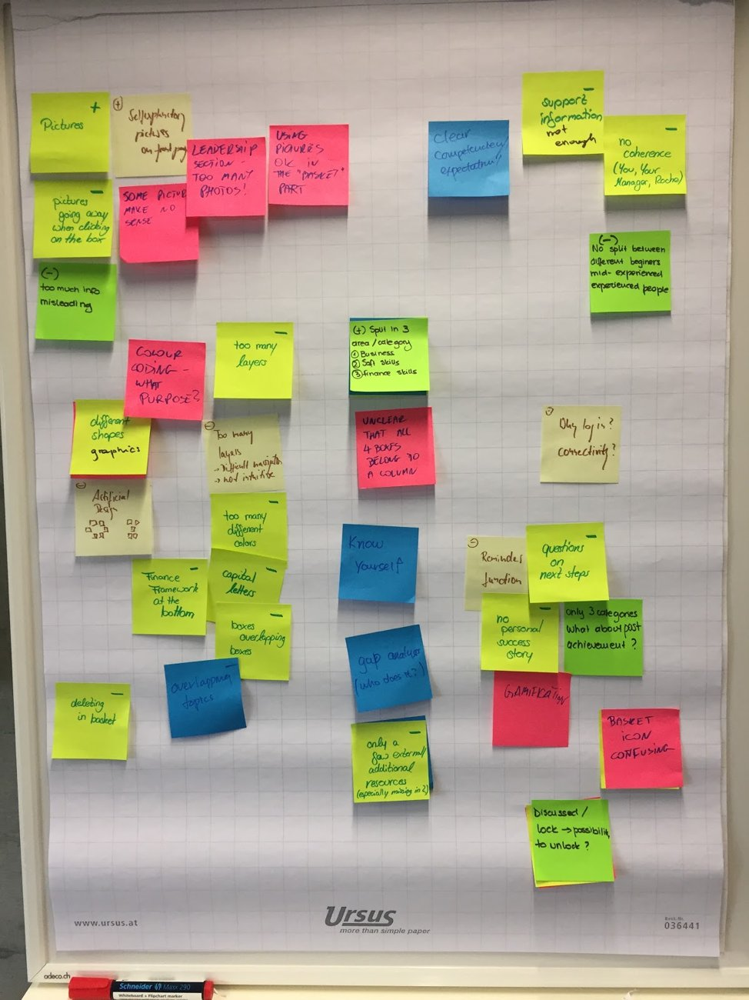
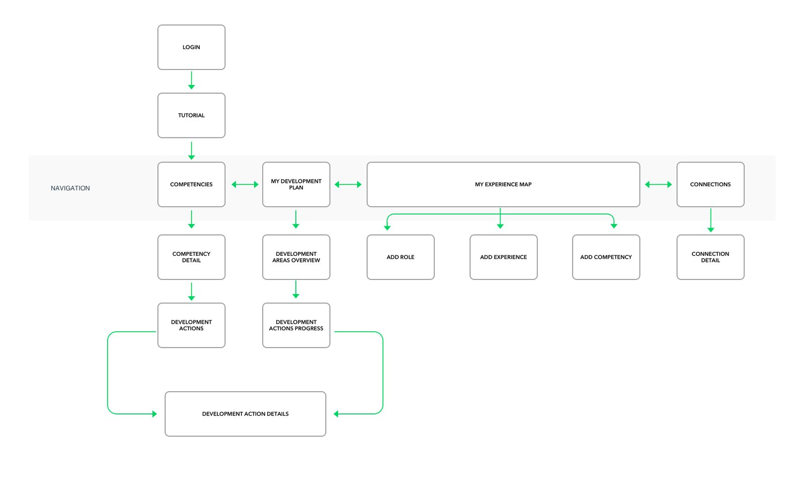
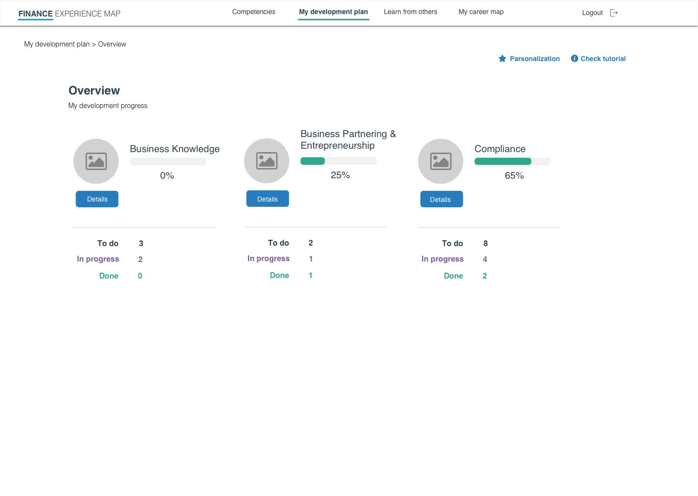
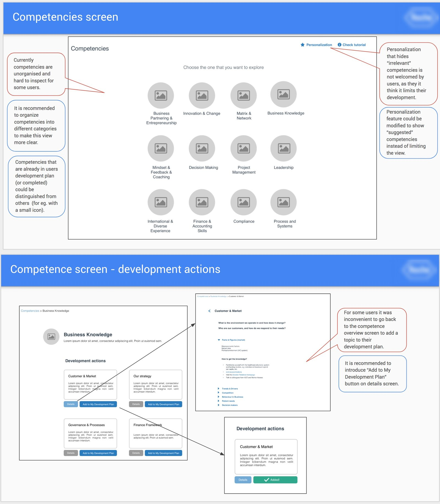
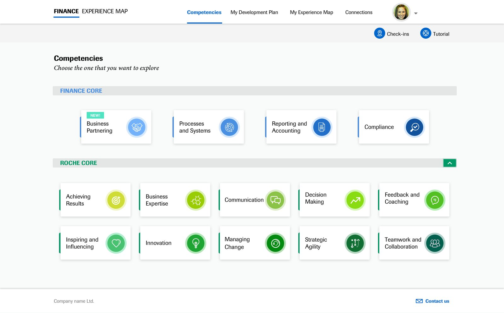
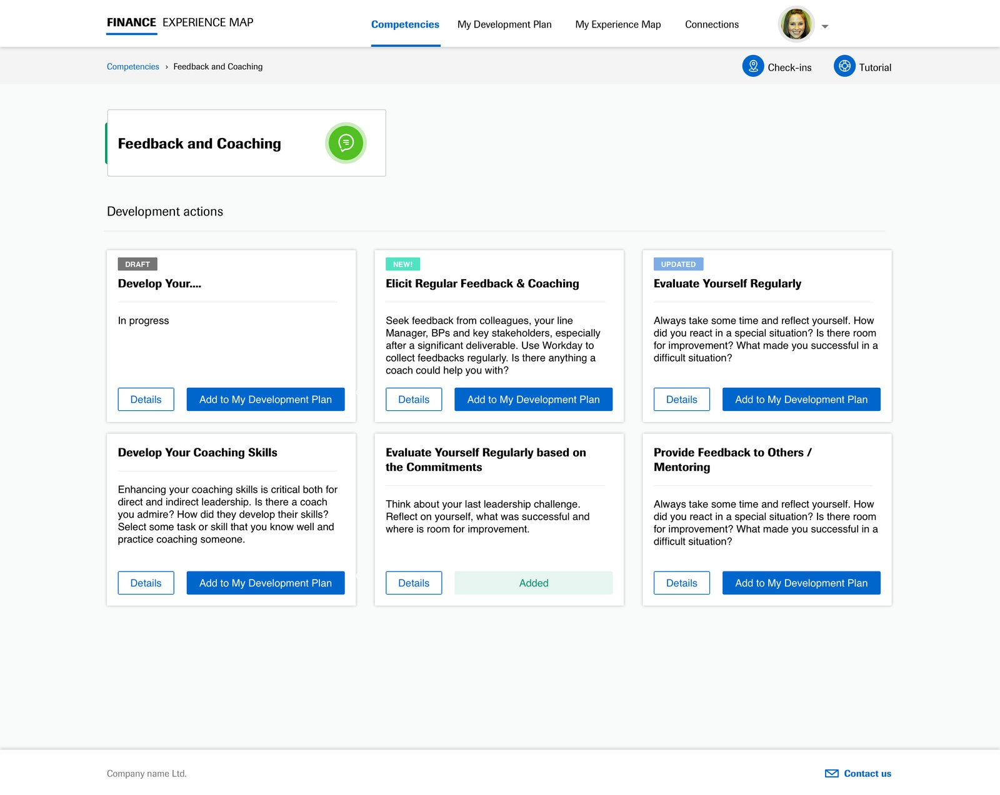
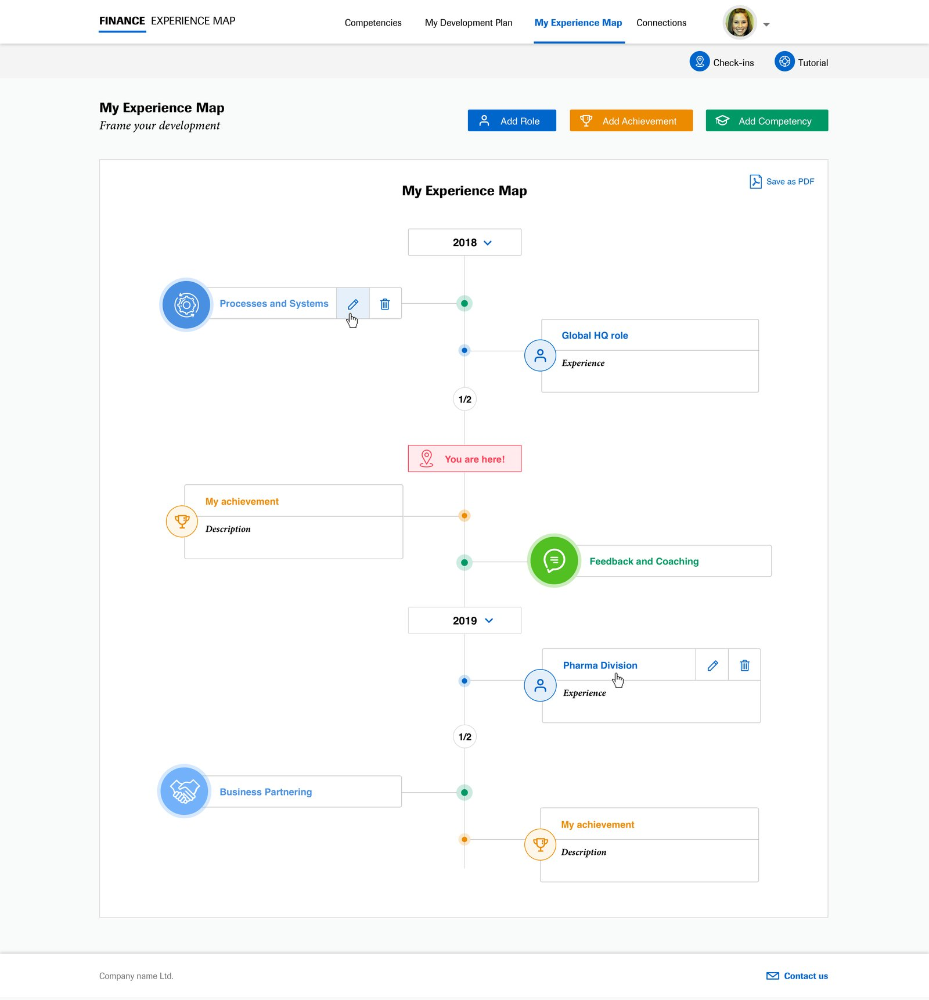
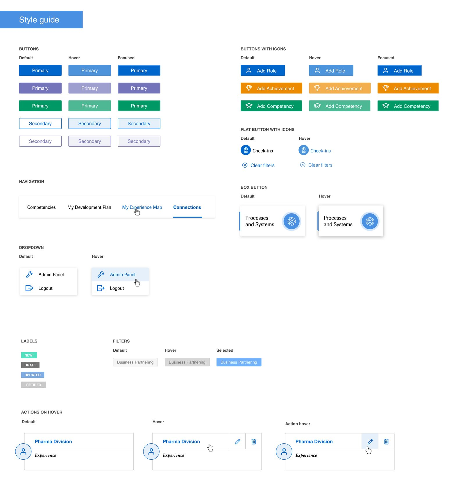
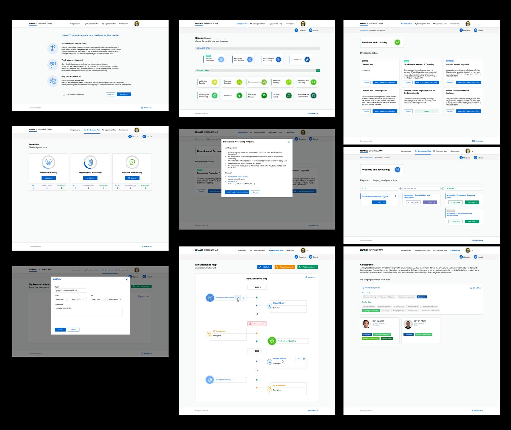

Turning a rarely used, unfriendly internal tool into a development resource people actually want to open.
ClientRoche
RoleInteraction Designer, UI Designer, Usability Test contributor
Overview
The Finance Experience Map is a resource aimed at helping employees in Finance create a more meaningful and useful Individual Development Plan. The tool provides an overview of different competencies and respective development actions that can help as you check-in with your manager on your personal development needs.
Current solution
Currently users have access to an outdated web app which does not reach their expectations. Finance Experience Map is used very rarely, the app is not user friendly and the user experience is on a very low level.
Challenge
Create a more engaging tool for users, which follows the corporate brand style guide, is more intuitive, and has a user experience on a very high level that encourages users to use the tool more often.
The Research
The design process was followed by user research. To understand user needs and the tool's pain points, UX Researchers facilitated a co-creation workshop for the key users and stakeholders.
Pain points
Not engaging, not simple, not user friendly
No clear message on what the purpose of the tool is
No clarity on how to use it, no introduction
Content outdated, no maintenance
No interaction, no collaboration, no personalization
No real-life examples or stories to relate to
No clear information on career next steps
Lack of focus — what's actually relevant to me?
Top ideas from the workshop
Introduction on the first page
Intuitive navigation with fewer layers
Consistent, on-brand, better looking design
Review and update content
Gamification
A "what's next" feature to track progress, with reminders
Link to TPP (HR tool) to connect with people and real stories
Identify a FEM owner

The co-creation workshop board: pain points and ideas gathered from key users and stakeholders.
Key users: people from the financial area who want to create their individual development plan and frame their development by creating an experience map. After the workshop, interviews with 10 participants were conducted. The results were similar to the findings already collected.
Role & Deliverables
My role
Interaction Designer, UI Designer, Usability Test contributor.
Deliverables
Site MapUser FlowsWireframes (Sketch)Interactive prototype (InVision)High fidelity mockup (Sketch)Assets + Basic style guideInVision Inspect for developers
Site Map & Wireframes

Site map: navigation from login through competencies, development plan and experience map.
Wireframes & Interactive Prototype

Development plan overview wireframe, built as a clickable InVision prototype.
Usability Test
Users in general have very positive opinions about the new Finance Experience Map prototype. They think it's a helpful solution and are glad it's being redesigned. Using the tool is easy; tasks were performed without serious problems and no critical errors happened, though in some cases there's still room for improvement.
Personalization is not welcomed by all users, as some worry it may limit their development possibilities and aren't sure how to complete personalization steps.
Development overview and progress timeline are easy to use, understandable and helpful.
"Learn from others" is confusing for some users — needs clearer explanation of its purpose and benefits.
"My career map" is the most praised feature in the application, though it's recommended to add some elements to it.
Taking into account the usability test report and UX Researcher recommendations, the wireframes were fixed and improved.

Usability test annotations on the competencies and development-actions screens.
Final UI Design

Competencies screen, grouped by Finance Core and Roche Core.

Development actions for a selected competency.

My Experience Map — the most praised feature, a personal development timeline.

Basic style guide: buttons, navigation, dropdowns and labels.

The full set of final screens, from onboarding through competencies, reporting and the experience map.